Companion to Source Available Arcade · 6 September 2026
More of what you liked about the js13k entries: games where the idea is the whole product. Sorted by where the constraint comes from, because that turns out to be what produces them.
js13k doesn't just publish overall winners — it publishes a separate ranking for Innovation, voted by the entrants themselves. That is a far better filter for "genuinely unique mechanic" than the overall top-13, whose write-ups mostly praise pixel art and sound design. Three years of that ranking make up the first section below.
Worth saying plainly once: these are judged scores, not measurements. A peer vote for Innovation says a room of game developers found something surprising, which is useful and is not the same as fact. Where this page does rank things itself — the PuzzleScript section — it ranks from the rulesets, which are readable, rather than from vibes.
The top five in the Innovation criterion for each of the last three completed competitions, with the score each received. Every game plays in a browser, every one is 13 KB or smaller, and every entry page carries a link to its source.
Not Innovation-ranked
from the official write-ups
The Innovation lists above are rankings, not reviews — I'm passing on the field's own verdict rather than describing games I haven't played. Two entries elsewhere in the results do come with a published description of the mechanic, and both are worth the click: Tiny Yurts, called a "perfect version of mini motorways" with curvy line merging, and FEAST NIGHT, where you interact entirely through nods and shakes.
Stephen "increpare" Lavelle's engine. You write a handful of rewrite rules over a tile grid — [ > Player | Crate ] -> [ > Player | > Crate ] is Sokoban, entire — and that is the game. The source travels in the URL: any game's rules open in the editor in a few dozen readable lines. Nothing else on either of these pages puts a novel mechanic this close to the surface.
Write, play, and share entirely in the browser. Because a game is just its ruleset, the whole engine is a machine for testing "what if this one verb worked differently" — which is exactly the question a unique mechanic is the answer to.
Auroriax's fork gathers the useful community modifications into one editor. The built-in solver is the interesting part if you're designing rather than playing: it will tell you whether a level you just invented is actually solvable.
Sibling fork DungleScript renders the same rules as 3D voxels.
I pulled the rulesets for all 114 games in the PuzzleScript gallery from their gists and read the RULES section of each. Below are the twelve whose rules buy the most play, ranked by how much they change about Sokoban per rule spent — rule count shown, and the rule that does the work quoted where it is short enough to read.
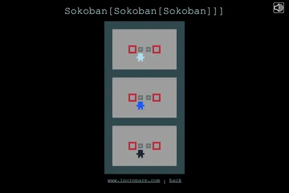
[ > Player | stationary Crate | no obstacle ] [stationary player2] -> [ | Player | Crate ] [> player2]Not spatial recursion — nested move functions. Succeeding at a push on the first board is what supplies the input to the second board, and a push there supplies the third. You are not playing three Sokobans; you are playing one whose controller is another one. Three rules, and the second and third are the same rule shifted down a level.
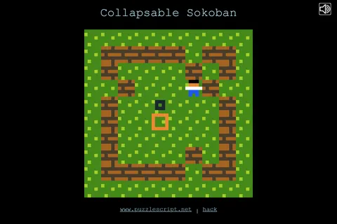
[Wall|...|Player] -> [> Wall|...|Player]Standard Sokoban, plus that. Every wall in line with you advances one square toward you, every turn. The room closes as you solve it, so position stops being free and every move spends space you cannot get back. The best ratio in the gallery: one added line, a completely different game.
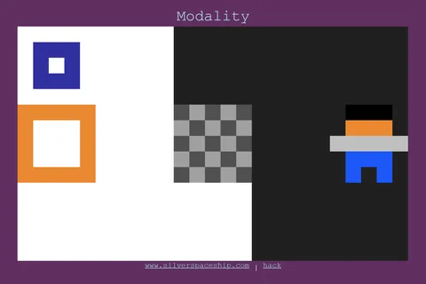
[ > Player Black | Crate Black ] -> [ > Player Black | > Crate Black ]
[ > Player White | Black ] -> CANCELYou have a colour. You can push only crates of your own colour, and you cannot step onto the opposite colour at all. Two constraints written as two cancellations, and the board splits into a pair of interleaved mazes you have to solve alternately.
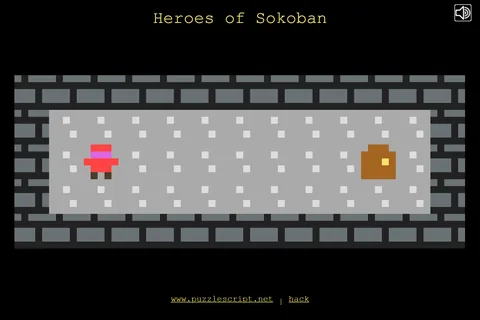
[ > Fighter | Moveable ] -> [ > Fighter | > Moveable ]
[ < Thief | Moveable ] -> [ < Thief | < Moveable ]
[ > Wizard ] -> [ Wizard > Temp ]Three verbs on one grid, and you switch between them. The Fighter pushes, and shoves whole chains. The Thief pulls — moving away drags the block after her. The Wizard swaps places with whatever it faces. The most rules on this list and it earns them: the only entry whose difficulty comes from verbs interacting rather than from one twist, and the only one that spawned two sequels.
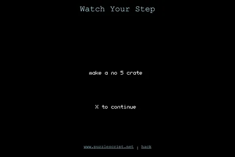
[ > Crate0 | Crate0 ] -> [ | Crate1 ]
late [Floor4 no Object] -> [no Floor Crate0]Two ideas stacked, which makes it the densest thing here. Crates merge on collision the way 2048 tiles do — 0 into 0 makes 1, up to 4, and reaching a 4 wins. Meanwhile the floor ages under your feet, and floor that has aged four steps sprouts a fresh crate. The board you cross is the board that refills behind you.
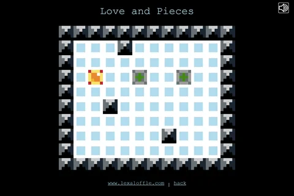
late [ Player | GrayBlock ] -> [ Player | Player ]Anything grey you touch becomes you, and the win condition is that no grey is left. So the puzzle is spreading, every copy takes your input at once, and succeeding makes you progressively harder to steer. Written by Joseph White, who went on to build PICO-8.
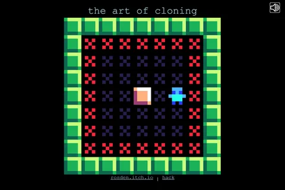
[ > Player | Crate ] -> [ player | > Crate ]Look closely at the right-hand side: the > in front of Player is gone. You push the crate and you stay exactly where you are. Sokoban's core assumption is that pushing costs you your position — delete it and every solution you know stops working.
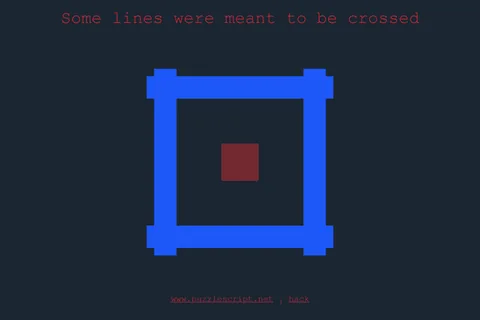
LATE [player no start] -> [player tail]
[> player|tail] -> cancelYour own trail hardens into wall behind you, and you win by clearing every path and returning to where you started. A Hamiltonian circuit expressed in two rules, with the elegant consequence that the puzzle tightens in exact proportion to how much of it you have solved.
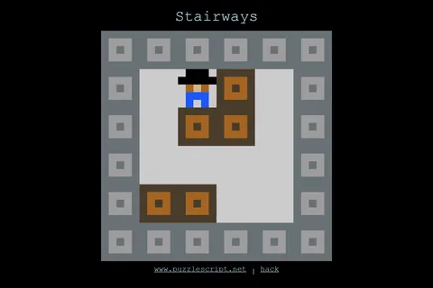
[> Player|Block No Stairs] -> [> Player|> Block No Stairs]
[> Player|Block Stairs] -> [Player|> Block Stairs]The same push, conditioned on the tile it happens on: everywhere else you travel with the block, on stairs you stay behind. One rule written twice with a single term changed — the tidiest demonstration in the gallery of how PuzzleScript wants you to think.
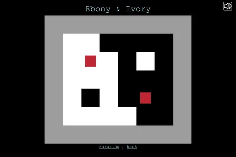
[ > Black | White ] -> [ White | Black ]Pushing something into its opposite does not move it — the two trade places. Displacement stops being transport and becomes exchange, so the board's contents are conserved and you are only ever rearranging what is already there.
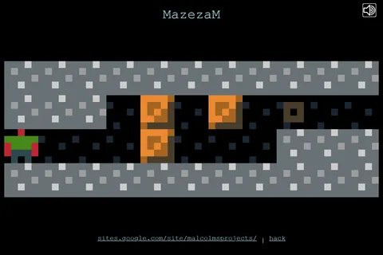
Horizontal [ > Player | Crate | ... | No Object | WallLike ] -> [ > Player | > Crate | ... | | WallLike ]Moving sideways shoves an entire row along until it finds a gap. You are not pushing a block, you are operating a row — so a level reads less as a maze than as a bank of sliding registers you have to align.
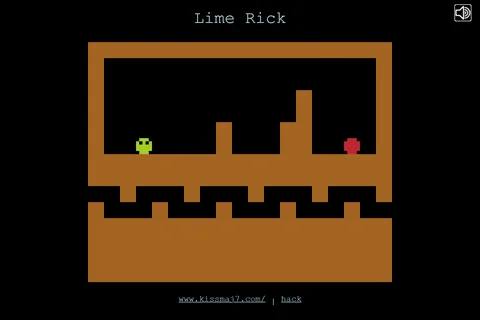
UP [ UP PlayerHead3 | No Obstacle ] -> [ PlayerBodyV | PlayerHead4 ]A snake that climbs. Your body is a fixed stack of segments, and moving up spends one — so the creature's own length is the resource, and the level is a question about how much of yourself you can afford to leave behind on the way.
The degenerate case, outside the ranking. the undertaking by anna anthropy has the shortest ruleset in the gallery at one rule — [ Autoplayer ] -> [ Player Exit ], against a win condition of "all Player on Exit". The game wins itself. It is a conceptual piece rather than a mechanic, and it belongs here as the floor of the scale rather than the top of it.
Fantasy consoles invent a machine that never existed, then hold you to its spec. Same forcing function as 13 KB, applied to pixels and channels instead of bytes.
The open one. Code, sprite, map, sound and music editors are all built into the console itself, games ship as single cartridge files, and the community catalogue plays in the browser with nothing installed. It accepts nine languages — Lua, JavaScript, Python, Ruby, Wren, Fennel, Squirrel, Janet and Moonscript — which makes it an unusually low-friction place to prototype a mechanic.
The larger and more famous cartridge scene, and worth browsing even though the tool isn't free. Carts play in the browser at no cost and their source is viewable in the console, so it works as a reading library either way.
Listed for completeness, not as an open-source recommendation — PICO-8 itself is a paid, closed product. TIC-80 is the one you can fork.
Where 13 KB starts to look generous. Neither of these is really a games competition, but both are where the tricks that make 13 KB games possible were worked out.
Started as a joke in 2010 and became a serious annual competition before winding down. A thirteenth of a js13k budget, and it still produced playable games — a full colour Tetris in 1024 bytes among them. The demo archives are still up and each entry's source is right there, because at that size the source is the entry.
js1k.com/2010-first/demos · the successor runs as js1024
You get a function u(t), a canvas, and 140 characters. Everything is remixable in place, so a good trick spreads and mutates through the site within hours. The #game tag is where people have squeezed something interactive into that budget — less a place to find games to play than the clearest available demonstration that mechanics cost almost nothing and content costs everything.
Not size limits but time limits, and crucially a rule that the code ships too — which is what makes them useful rather than merely fun to browse.
The Compo is the strict half: solo, 48 hours, all assets made during the event, and source code must be included in the submission — for the Jam track too. Two decades of themed archives, and because the clock forbids scope, entries live or die on a single idea. Filter to web builds and you have a near-endless supply of exactly what you asked for.
Build a finished roguelike in a week. The genre's whole tradition is that a run is generated from rules rather than authored, so a seven-day budget pushes entrants straight at the mechanic — and the community norm of writing up what you tried means the reasoning is usually published even when the code isn't.
Unlike Ludum Dare Compo, releasing source is a convention here rather than a rule. Check per entry.
All five sections above are archives rather than lists, so the useful skill is knowing where the mechanic is written down.
Every game is a gist id in its play URL. Swap play.html?p= for the editor and the entire ruleset is in front of you — usually under a hundred lines, with the novel idea sitting in two or three of them. There is no faster way to see how a mechanic is actually specified.
Overall rank rewards balance, so it surfaces polished games. The Innovation column surfaces strange ones. The community results viewer lets you sort the full field by any single criterion rather than just the published top five.
Every source here works the same way: fix a budget that rules out content, and the only remaining lever is the rules. 13 KB, 1024 bytes, 140 characters, 240×136 pixels, 48 hours. The theme is what these jams announce; the budget is what actually shapes the entries.
An Innovation score is a room of developers agreeing something surprised them. It is a good pointer and a bad proof — note that 2024's top Innovation score was 4.47 and 2025's was 4.03, which says more about how each year's field voted than about the games.